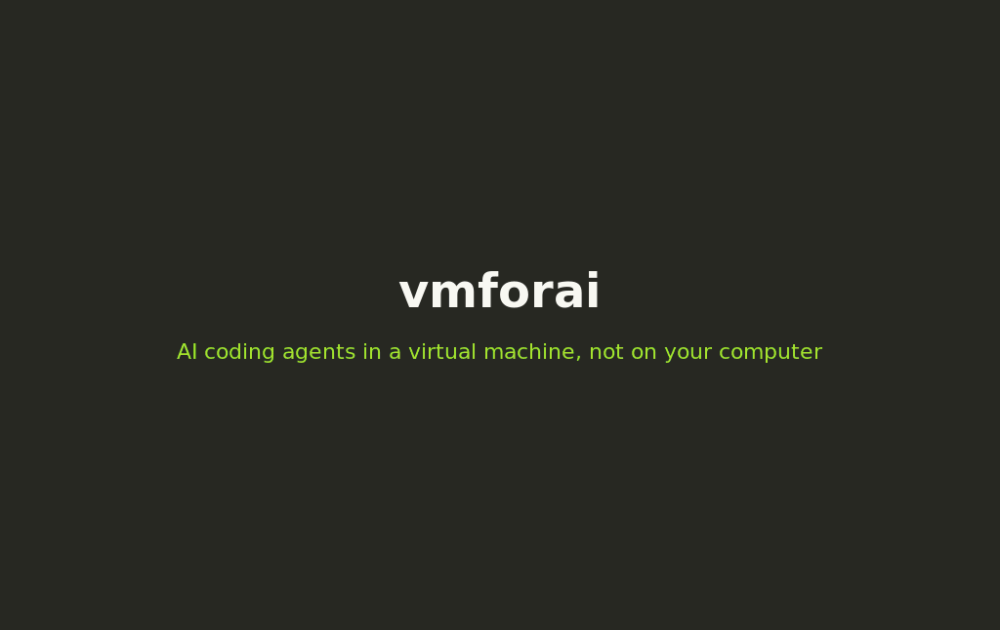

Run AI coding agents in a VM,
not on your computer.
vmforai runs Claude Code, Codex, Gemini CLI, OpenCode or aider inside a
virtual machine with one command. The agent may install, run and break whatever it
likes. Every start takes a snapshot first, so vmforai undo takes it all back.
# Linux (Debian, Ubuntu, Arch, Fedora, openSUSE, Alpine) curl -fsSL https://raw.githubusercontent.com/emincan2000/vmforai/main/install.sh | bash vmforai create dev # a new Debian VM with Claude Code in it vmforai dev # Claude Code, running in the VM

Why a VM?
The agent may act without asking
rm -rf, a careless sudo or a broken package only break the VM, and one command undoes them.
Nothing of yours is in it
No SSH keys, no browser, no GitHub token. A repository goes in as a copy; the agent's work comes back as a git branch.
A whole computer, not a container
Its own kernel, systemd, Docker, a desktop if you want one. Windows VMs too.
It goes on without you
Tasks run in the background. Follow them in the terminal UI or on your phone, with a notification when they end.
What it does
Give a task and go
vmforai run dev "fix the failing tests": an agent works on it alone, in the background.
One task, several tries
vmforai try dev 3 "the task": three copies of the VM in seconds, each doing the task; take the best.
From an issue to a pull request
vmforai fix dev 42 --test "npm test": the agent works on issue 42, the tests run in the VM, a PR opens when they pass.
A network on a short leash
vmforai net dev restricted: the VM reaches only the hosts on its list, enforced on your computer.
From the phone
vmforai phone shows a QR code: list VMs, open agents in a terminal, give tasks, get notifications.
Five agents
Claude Code, Codex, Gemini CLI, OpenCode and aider, installed on first use.
Terminal UI and phone

vmforai ui: make VMs, open shells and agents in tabs, snapshots, ports, projects.

vmforai phone: the same from the phone's browser.
vmforai, a container, or the cloud?
| vmforai | A container (Docker, devcontainer) | Cloud agents | |
|---|---|---|---|
| Runs | in a VM on your computer (or any machine you reach over SSH) | on your computer, sharing its kernel | on the provider's servers |
| Take it all back | vmforai undo, from snapshots | throw the container away and build it again | nothing to take back here |
| The agent may use | sudo, systemd, Docker, a desktop, Windows | what the image and its rights allow | what the provider's machine allows |
| Your files and keys | out of reach; a repository goes in as a copy | out of reach unless mounted | out of reach; it works on your GitHub repository |
| Costs | your hardware | your hardware | the provider's prices |
A container is lighter and starts in a second: when that is enough, use one. vmforai is for when the agent should have a whole machine to itself, and you want to be able to take back all it did.
Install
# Linux: puts vmforai (and vmf) in ~/.local/bin, then installs libvirt and QEMU
curl -fsSL https://raw.githubusercontent.com/emincan2000/vmforai/main/install.sh | bash
# Windows 10 or 11, in PowerShell: sets vmforai up in WSL
irm https://raw.githubusercontent.com/emincan2000/vmforai/main/install.ps1 | iex
Also a .deb in the releases and a
PKGBUILD for Arch Linux.
Later, vmforai update brings it to the latest release.
Already have VMs? vmforai add dev --host ADDRESS works with any VM you reach over SSH.